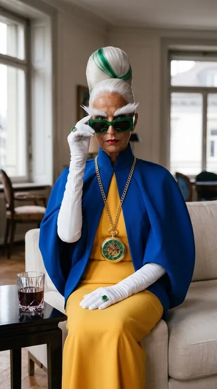
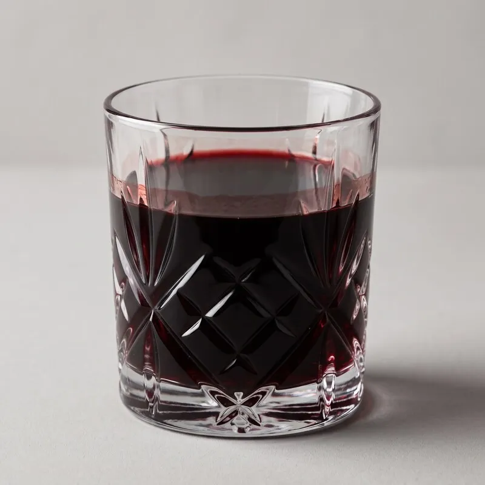

00:00:01:00Arte · Influencer IA y sistema de contenido
Helena von Arx
Una influencer creada con IA desde cero —una suiza de 75 años que se reconoce en una miniatura— y el sistema de contenido que convierte un brief corto en un post nuevo.
- Categoría
- Influencer IA y sistema de contenido
- Año
- 2026
- Cliente
- Helena von Arx (personaje ficticio)
- Tipo
- Concepto
- Rol
- Diseño de personaje, dirección creativa, pipeline de IA
- Herramientas
- Magnific Spaces, Google Nano Banana 2.1, Gemini Flash






01 / 07
Un personaje y la máquina que la rodea: todo lo que hace reconocible a Helena está fijo, así que cada post nuevo está a unas pocas líneas de brief.
Brief
Helena von Arx es una influencer que diseñé desde cero con IA: una suiza de 75 años que vive entre Zúrich, Mónaco y St. Moritz. El brief que me puse: un personaje lo bastante fuerte como para sostener una cuenta sola, y un sistema que convierta unas pocas líneas de brief en un post nuevo sin que ella cambie de una imagen a otra.
Desafío
Un personaje tiene que reconocerse antes de que alguien lea el texto, y un modelo de imagen tiene que dibujarlo igual cada vez. La mayor parte del trabajo fue decidir qué hace que Helena sea Helena, y escribirlo con tanta precisión que el modelo no pueda equivocarse.
La idea
Fijar todo lo que hace a Helena. Cambiar una sola cosa por post —un brief corto— y que el sistema haga el resto.
Proceso
- 01
Personaje
Tres versiones de la ficha de personaje, de una señora clásica y discreta a una silueta alargada en bloques de color saturado —cejas blancas como plumas, una mecha esmeralda, anteojos esmeralda—. Después, un retrato principal para fijar su cara.
- 02
Biblia visual
Una descripción escrita de lo que nunca cambia —cuerpo, cara, piezas firma, reglas de color— y una lista de lo que nunca aparece. Piel pálida, manos desnudas, beige, sonrisas y logos, fuera.
- 03
Objetos firma
Un reloj de bolsillo dorado del tamaño de un platito, siempre sobre el pecho, y un vaso de cristal con una bebida roja casi negra sin nombre, que los camareros traen y ella nunca pide.
- 04
Locaciones
Ocho lugares escritos una sola vez, cada uno con su luz — Zúrich, Ginebra, St. Moritz, Londres, Mónaco, Nueva York, Dubái y el lago de Como.
- 05
El post
Un brief con pilar, locación, acción, vestuario, reloj, bebida y encuadre. Un redactor de prompts con LLM lo combina con la biblia y las referencias y escribe el prompt de imagen; del otro lado sale la imagen 9:16. La frase del post se suma en la edición, nunca dentro de la imagen.
El sistema
Cinco paneles, un brief
Los tres primeros paneles son su identidad y no cambian entre posts. El cuarto es el brief, lo único que edito. El quinto escribe el prompt y genera la imagen.
01 Identidad
 Helena — FichaHelena — Retrato
Helena — FichaHelena — Retrato02 Objetos y lugares
El relojMónaco — LocaciónLondres — Locación03 Brief
Pilar · locación · acción · vestuario · reloj · bebida · encuadre
Brief del postBrief + biblia visual + referencias → un prompt de imagen
Redactor de prompts04 Post
01 · Encontrar a Helena
Tres fichas hasta una silueta
Las dos primeras versiones eran elegantes y olvidables. La tercera lleva todo al extremo —altura, cejas, pelo, color— hasta que se la reconoce desde la otra punta del feed.


02 · Objetos firma
El reloj y la bebida
Dos objetos que aparecen en toda su historia. El reloj está siempre sobre su pecho; la bebida solo aparece cuando el brief lo pide, y nadie dice nunca qué es.
03 · Locaciones
Dónde vive
Ocho lugares, cada uno con una descripción y una luz fijas, para que la misma habitación se vea igual en cada post. Estos tres ya están generados.
04 · Un post
Del brief a la imagen
El brief del primer post, tal como está en el tablero:
Pilar — La imagen como activo. Locación — su departamento en Zúrich. Acción — se sienta muy erguida en el borde del sofá crema y se baja los anteojos esmeralda con un dedo enguantado, mirando directo a cámara. Vestuario — una capa azul cobalto de cuello alto y rígido sobre un vestido columna amarillo azafrán. Bebida — sí, sin tocar, en la mesa auxiliar. Encuadre — de la cintura para arriba, 9:16. Luz — tarde gris y suave.
Frase que se suma en la edición — "La apariencia es la primera negociación."
Entregables
- Ficha de personaje y retrato principal
- Biblia visual con rasgos fijos y una lista de lo que nunca aparece
- 2 objetos firma — el reloj y la bebida
- 8 locaciones escritas, 3 de ellas generadas
- Una plantilla de brief y un redactor de prompts que lo convierte en imagen
- Primer post — una imagen 9:16 para stories y reels
Créditos
- Personaje, dirección creativa y pipeline de IA
- Lautaro Ferrandi
- Modelo de imagen
- Google Nano Banana 2.1 (vía Magnific)
- Redactor de prompts
- Gemini Flash (vía Magnific)
Siguiente en ArteVJ / Visuales en tiempo real
Pink Mountains →